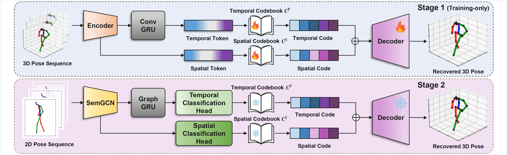

Figure 1: Overview of the proposed framework.
3D human pose estimation from monocular images is inherently challenging due to frequent occlusions, which introduce significant ambiguity in joint visibility. For instance, regression-based methods are highly sensitive to these ambiguities, often leading to unstable and jittery pose estimates. To overcome these limitations, recent token-based methods discretize poses into structured representations and better capture joint dependencies. However, most existing approaches operate in a frame-wise manner, neglecting temporal continuity and consequently suffering from time-inconsistent predictions. Therefore, we propose a spatio-temporal token-based framework for 3D human pose estimation that explicitly models both spatial and temporal dependencies. In specific, a Spatio-Temporal Tokenizer decomposes 3D pose sequences into discrete spatial and temporal tokens via a dual codebook design. To predict these tokens from 2D pose sequences, we further develop a token classifier based on a SemGCN–GraphGRU architecture, enabling effective temporal reasoning while preserving skeletal structure. Extensive experiments on the Human3.6M dataset demonstrate that our method achieves state-of-the-art performance among short-sequence methods, while significantly reducing high-frequency jitter and producing smooth, physically plausible 3D pose sequences.
| Parameter | Value | Description |
|---|---|---|
| num_blocks | 4 | Number of blocks in the encoder |
| hidden_dim | 512 | Hidden dimension |
| token_inter_dim | 64 | Token intermediate dimension |
| hidden_inter_dim | 512 | Hidden intermediate dimension |
| drop_rate | 0.2 | Encoder dropout rate |
| Parameter | Value | Description |
|---|---|---|
| num_blocks | 1 | Number of blocks in the decoder |
| hidden_dim | 32 | Hidden dimension |
| token_inter_dim | 64 | Token intermediate dimension |
| hidden_inter_dim | 64 | Hidden intermediate dimension |
| Parameter | Value | Description |
|---|---|---|
| token_num | 34 | Number of tokens used |
| token_dim | 512 | Embedding dimension of each token |
| s_token_class_num | 1024 | Number of spatial token classes (Codebook Size) |
| t_token_class_num | 1024 | Number of temporal token classes (Codebook Size) |
| ema_decay | 0.9 | EMA (Exponential Moving Average) coefficient for codebook update |
| Parameter | Value | Description |
|---|---|---|
| joint_loss_w | 1.0 | Joint reconstruction loss weight |
| e_loss_w | 5.0 | Embedding loss (Commitment Loss) weight |
| beta | 0.05 | Threshold for Smooth L1 Loss |
Video 1: Supplementary results video demonstrating the performance of our method.
@inproceedings{jeon2026token,
title={Token-Based Dual-Codebook Learning for Robust 3D Pose Lifting},
author={Jeon, Minsu and Lim, L. and Musialski, P.},
booktitle={Proceedings of Eurographics (Short Papers)},
year={2026}
}